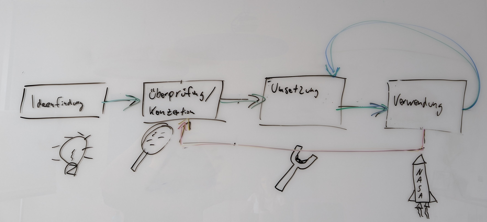
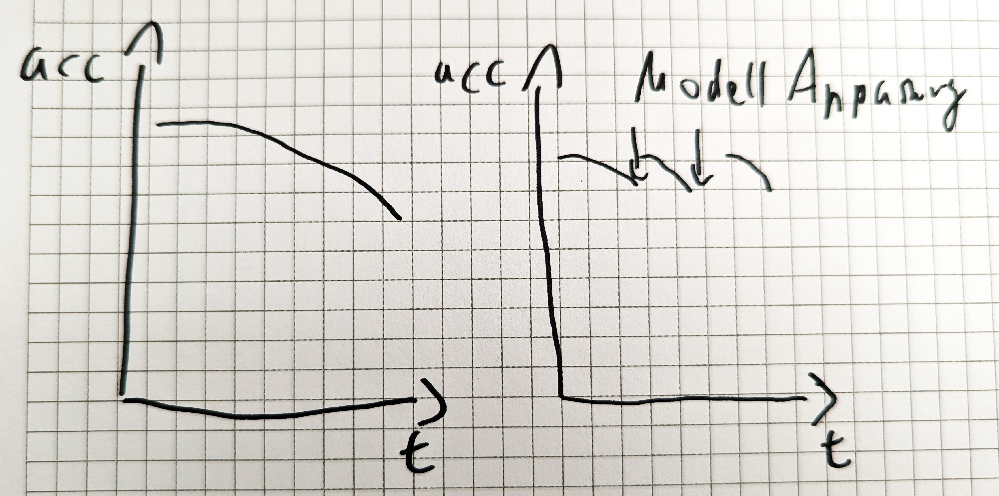

# Was ist KI?
### Open Knowledge <img src="img/ok/ok-projekte.png"> Wir bauen tolle Software
## Regelbasierte Systeme bilden den Kern unserer Software * oft getarnt als * Geschäftslogik * verschachtelte ifs * manchmal offensichtlich als * klassische KI-Expertensysteme * CSS
## Manche Sachen kann man nicht erklären, sondern nur zeigen ### The way that can be spoken is not the eternal way ### The name that can be named is not the eternal name Tao Te Ching
### Im Mittelalter wussten Künstler zwar von der Existenz von Elefanten, aber sie konnten sich nur auf die Beschreibungen von Reisenden stützen https://imgur.com/gallery/MpRBy <br> https://twitter.com/DannyDutch/status/1313211950738870272
<small> https://imgur.com/gallery/MpRBy </small>
<small> https://imgur.com/gallery/MpRBy </small>
<small> https://imgur.com/gallery/MpRBy </small>
<img src='img/elephants/RUwdSMK.jpeg'> <small> https://imgur.com/gallery/MpRBy </small>
### Machine Learning <!-- _Ein Ansatz zur Entwicklung von Software, bei dem die Software nicht von Hand geschrieben wird, sondern die Maschine auf der Grundlage gegebener Beispiele und Rahmenbedingungen herausfindet, was zu tun ist_ --> ein Ansatz zur *Entwicklung von Software*, bei dem man nicht von Hand Regeln schreibt, sondern *die Maschine herausfinden lässt*, was zu tun ist Grundlage dafür * eine *Metrik* für das Maß des Erfolgs, * *Beispieldaten* * *Rahmenbedingungen*
# Rahmenbedingungen
### Modelle dürfen grundlegende Eigenschaften der Welt nicht verletzen <video src="img/smurf/smurf-short.mp4" controls>
# Beispieldaten
## Es geht um Generalisierung ### Eine breite Datenbasis ist entscheidend für unseren Erfolg
# Unser kleines Beispiel aus Texas
### Kann eine KI, die auf Bildern der physischen Welt trainiert wurde, eine Comicfigur erkennen? Weil: Kinder können das!
### Standard-Modelle ohne spezielles Training <div class="container"> <div class="col"> </div> <div class="col"> <br> <br> <br> <h2 class="fragments"> 1. 'tree_frog': 68%, 1. 'tailed_frog': 8% 1. 'comic_book', 5% </h2> </div> </div>
# Nicht so toll
# Wir können aber ein paar Beispiele geben
<img src="data/squirrels/2022/austin-drinking.jpg">
### Ergebnisse nach dem Training auf dem Austin Squirrel <div class="container"> <div class="col"> </div> <div class="col"> <br> <br> <br> <h2 class="fragments"> 1. 'fox_squirrel': 35%, 1. 'tree_frog': 11% 1. 'muzzle', 6% </h2> </div> </div>
🥳
### Können wir dem Ergebnis trauen? ## Woran erkennt die KI unser Eichhörnchen? <img src="img/alibi-anchor-squirrel.png" style="height:400px;" class="fragment">
### Da macht unsere KI Schlapp ## DALL-E: A chubby green squirrel on the moon <img src="data/squirrels/2022/DALL-E-squirrels.png" style="height: 500px" class="fragment"> https://labs.openai.com/
# Und was hat das mit uns zu tun?
# Wir sind keine KI Firma, aber...
### Agile und Projekt-Management  ML Projekte laufen von Natur aus agil ab
### Künstliche Intelligenz (KI) vs Machine Learning (ML) <img src='img/se_ai_and_architecure.pptx.png'> Wir lösen nur einzelne, gut abgehangene Teile, wollen keine generelle KI bauen
### Gut abgehangene Anwendungen * Bilderkennung (wie hier gezeigt) * Anomalie detection * Language preprocessing * Recommendation * Time Series Prediction
### ML Modelle brauchen permanente Wartung  Das gilt nicht nur für ML Modelle, aber bei diesen ist es offensichtlicher
### Aber... By far, the most accurate representation of machine learning pipelines in the real world 🍿 😀 https://twitter.com/bindureddy/status/1552073812157403136
### Wir sind super darin, Software in Produktion zu bringen und da zu halten <img src='img/mlops/devops-vs-mlops.png'> MLOps ist eine Obermenge von DevOps
# Vielen Dank ## Was ist KI? Folien: https://djcordhose.github.io/ml-resources/2022-ai-ok.html